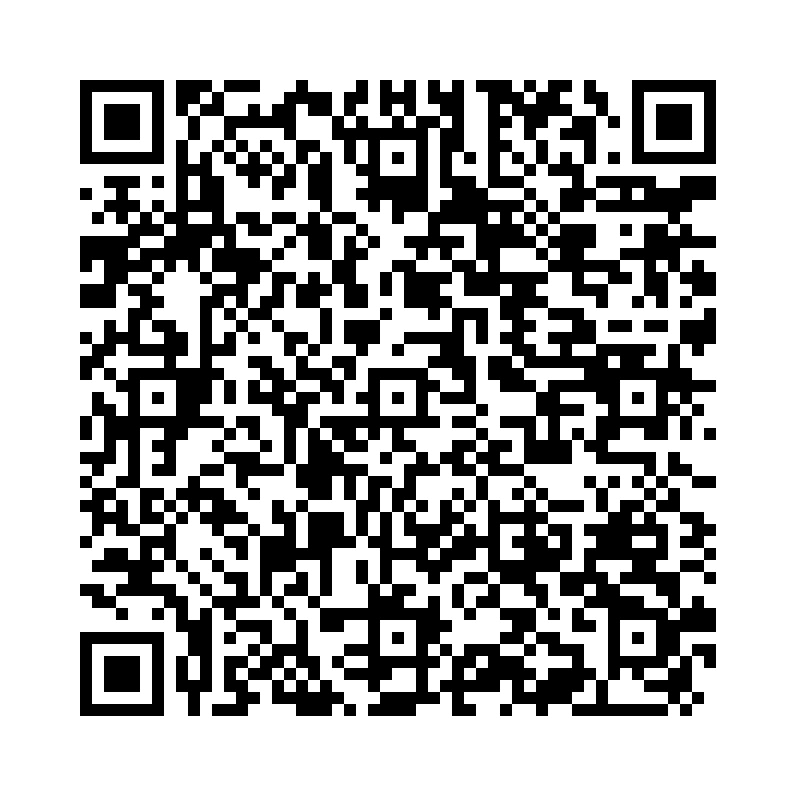

to不定詞 形容詞的用法 は、名詞や形容詞を修飾するために使われます。
to不定詞は「～するための」や「～することができる」といった意味を付加します。
以下の単語を並び替えて正しい文を作成しましょう。（和訳を参考にしてください）

問題1: (to / abroad / a / I / have / travel / plan) - 私は海外旅行をする計画を持っています。
解答: I have a plan to travel abroad.
解説: 名詞 "plan" を修飾するto不定詞の形容詞的用法です。
問題2: (to / was / him / polite / she / greet) - 彼に挨拶することは彼女にとって礼儀正しいことでした。
解答: She was polite to greet him.
解説: 形容詞 "polite" を修飾するto不定詞の形容詞的用法です。
問題3: (happy / meet / to / teacher / her / was / she) - 彼女は彼女の先生に会えて嬉しかった。
解答: She was happy to meet her teacher.
解説: 形容詞 "happy" を修飾するto不定詞の形容詞的用法です。
問題4: (an / book / interesting / to / read / is / this) - これは読むのに興味深い本です。
解答: This is an interesting book to read.
解説: 名詞 "book" を修飾するto不定詞の形容詞的用法です。
問題5: (chance / to / improve / skills / is / a / this / your) - これはあなたのスキルを向上させる機会です。
解答: This is a chance to improve your skills.
解説: 名詞 "chance" を修飾するto不定詞の形容詞的用法です。